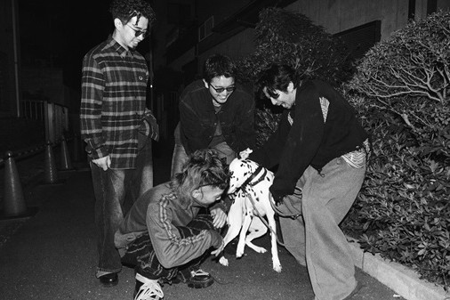

好きなアーティストを紹介します
King Gnu
日本の4人組ロックバンド。
ロックのみならず、R&Bやジャズ、J-POPなど幅広いジャンルの要素が取り入れられている。
椎名林檎
独特の音楽性や歌詞が特徴のシンガーソングライター。
サカナクション
ボーカル・ギター担当の山口一郎を中心としたロックバンド。
楽曲の緩急をつけた構成や、耳に残るメロディー、山口一郎の個性的なボーカルが特徴です。
日本の4人組ロックバンド。
ロックのみならず、R&Bやジャズ、J-POPなど幅広いジャンルの要素が取り入れられている。
独特の音楽性や歌詞が特徴のシンガーソングライター。
ボーカル・ギター担当の山口一郎を中心としたロックバンド。
楽曲の緩急をつけた構成や、耳に残るメロディー、山口一郎の個性的なボーカルが特徴です。